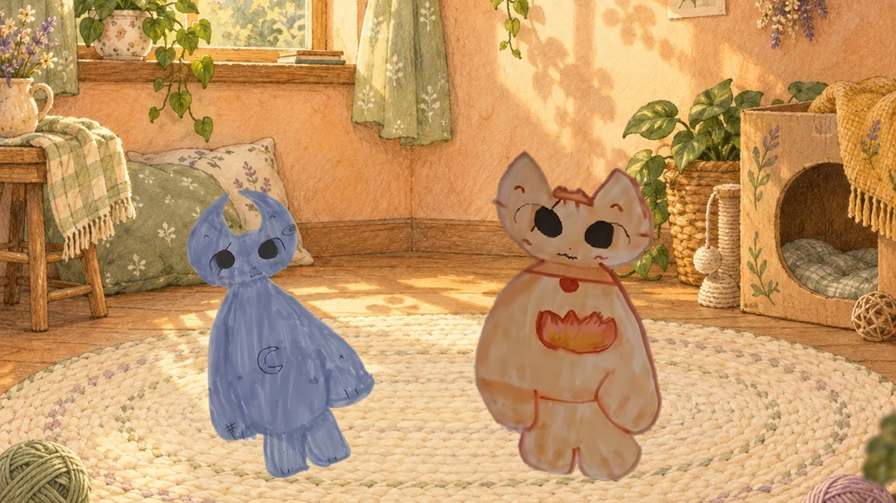
Кликер-антистресс
КотоВасия
Маленькая пауза для большого мурр: нажимайте на котика, собирайте новых пушистых друзей и отдыхайте пару минут посреди дня.
МАЛЕНЬКАЯ СЕМЕЙНАЯ СТУДИЯ
Antipos Team — это семья и котики. Мелисса рисует героев фломастерами на бумаге, а мы вместе превращаем рисунки в уютные игры.
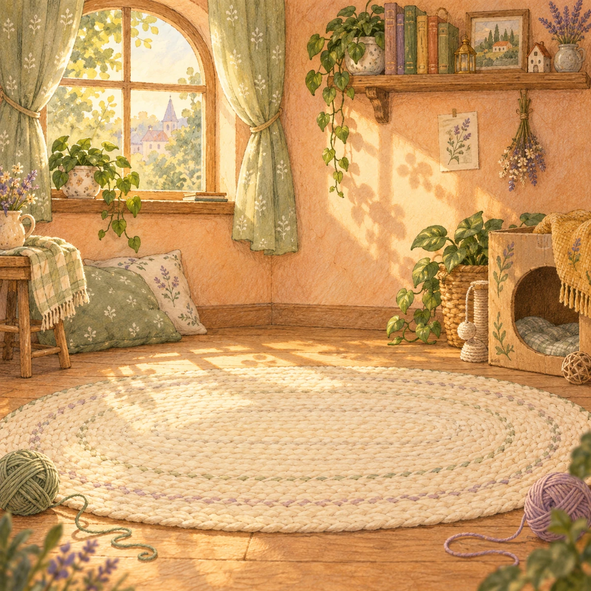
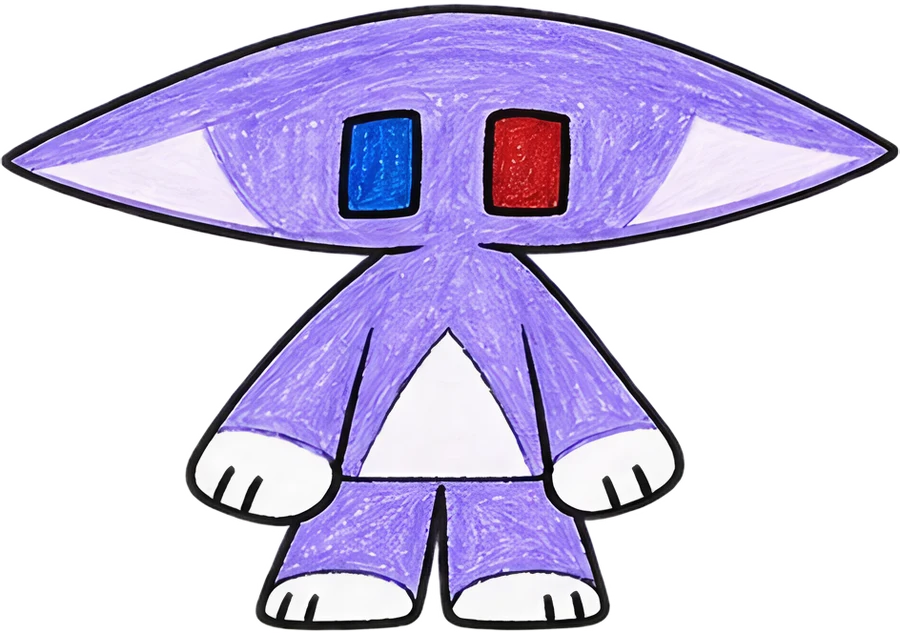
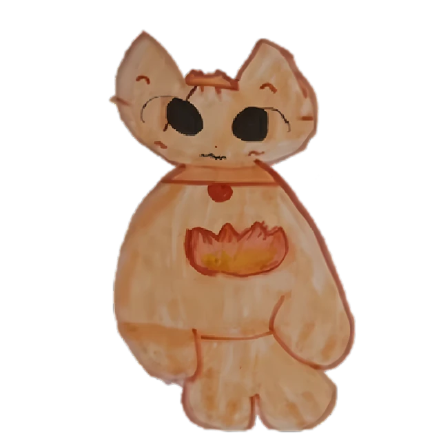
мурр, вы дома ♡Здесь живут котики из наших игрНАШИ ИГРЫ
Обе игры бесплатные и подходят всей семье. Котики в них нарисованы Мелиссой, а приключения разные.

Кликер-антистресс
Маленькая пауза для большого мурр: нажимайте на котика, собирайте новых пушистых друзей и отдыхайте пару минут посреди дня.
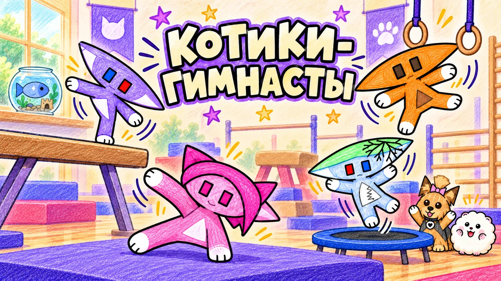
Питомцы и спорт · новинка
Растите котиков-спортсменов от малыша в подгузнике до чемпиона Звёздного кубка: тренировки, прогулки в большом 3D-парке и турниры.
КОТОВАСИЯ · НАША ПУШИСТАЯ КОМПАНИЯ
У одного на животике огонёк, у другого — луна. Загляните в КотоВасию, чтобы познакомиться со всеми.
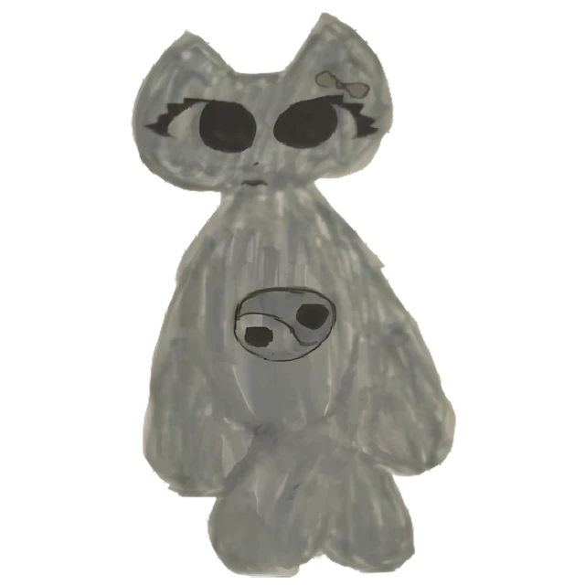
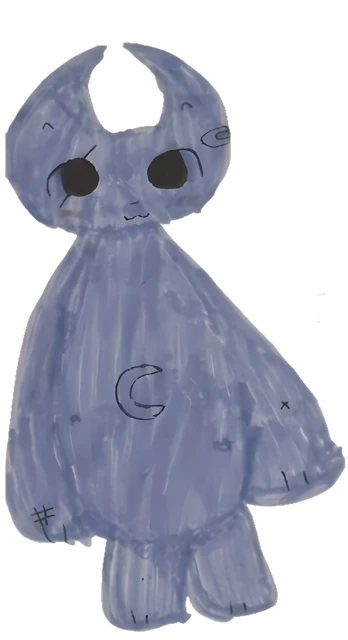
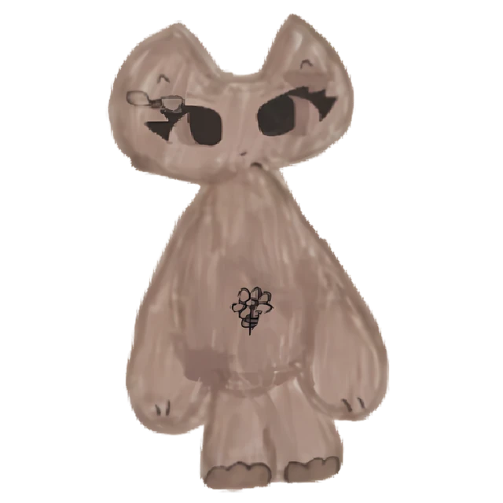
КОТИКИ-ГИМНАСТЫ · НОВАЯ ИГРА
Откройте коробку и угадайте по лапкам, кто там прячется. Дальше — забота, тренировки и первые медали в Детсадовском кубке.
Бревно, батут, кольца, опорный прыжок, лента, вольные, баскетбол, падел, плавание и канат — каждая тренировка на одно касание.
Котобашня, лабиринт, пруд с креветками, лодка, карусели и кафе. Днём и ночью, летом и в снегопад.
От Детсадовского кубка до Чемпионата мира и Звёздного кубка. Медали, фото в альбом и новые котики в коллекцию.
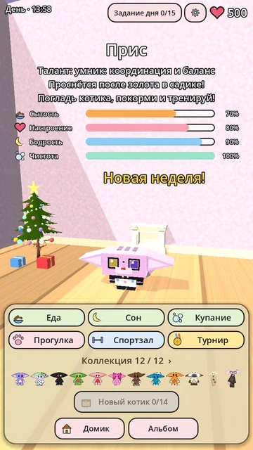
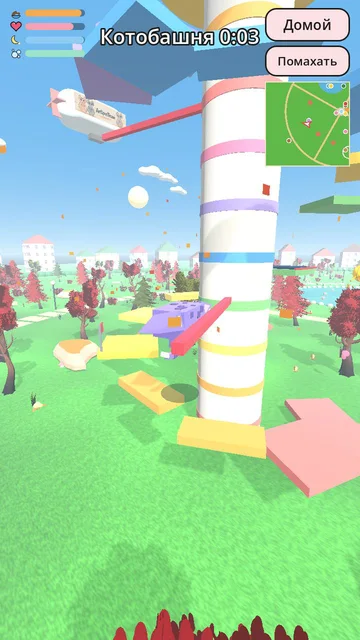
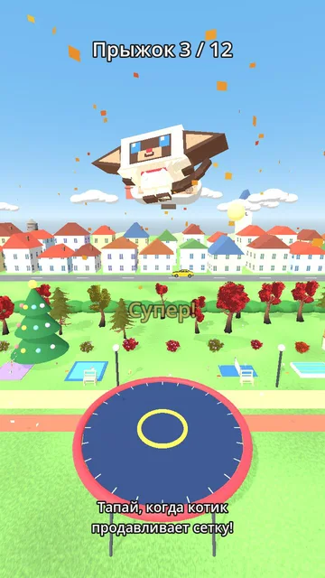
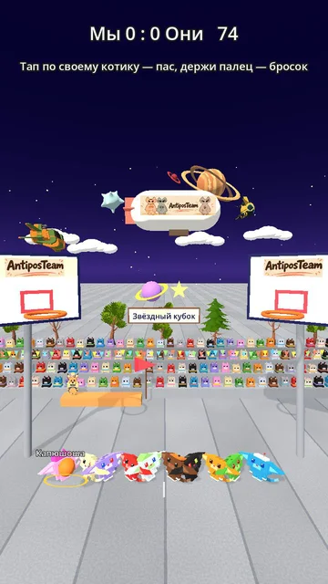
Скоро в RuStore, на Яндекс Играх и игровых порталах
ВАС УЖЕ ЖДУТ
КотоВасия уже ждёт вас в RuStore и App Store, а котики-гимнасты вот-вот выйдут на старт.
КотоВасия в RuStore